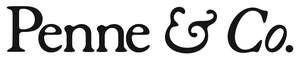
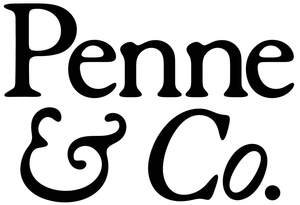

Trade Mark Journal No.2025/046 14 November 2025
UK00004273151 3 October 2025 (18,20,21,25,28,31,35)
Mark 1

Mark 2

- Class 18
- Dog collars, harnesses, leads, leashes, and training leads; Pet clothing, coats, and protective garments; Pet accessories made of leather and fabric; Bags, tote bags, and carriers for pets; Travel accessories for pets.
- Class 20
- Pet beds, cushions, and mats; pet houses, crates, kennels (non-metal); storage boxes and organisers for pet accessories.
- Class 21
- Pet feeding bowls, dishes, bottles, dispensers; Grooming brushes, combs, and tools for pets; Homeware goods including mugs, tumblers, glassware.
- Class 25
- Clothing, footwear, headwear; Coats, jackets, shirts, hats, gloves, scarves; Branded apparel for dog guardians.
- Class 28
- Pet toys, chew toys, tug toys; Toys and games for humans (including branded plush and lifestyle toys).
- Class 31
- Edible pet treats; Dog food and nutritional products for pets.
- Class 35
- Retail services including online retail store services connected to the sale of dog collars, harnesses, leads, leashes, and training leads; pet clothing, coats, and protective garments; pet accessories made of leather and fabric; bags, tote bags, and carriers for pets; travel accessories for pets; pet beds, cushions, and mats; pet houses, crates, kennels (non-metal); storage boxes and organisers for pet accessories; pet feeding bowls, dishes, bottles, dispensers; grooming brushes, combs, and tools for pets; homeware goods including mugs, tumblers, glassware; clothing, footwear, headwear; coats, jackets, shirts, hats, gloves, scarves; branded apparel for dog guardians; pet toys, chew toys, tug toys; toys and games for humans (including branded plush and lifestyle toys); edible pet treats; dog food and nutritional products for pets; business consultancy relating to pet ownership and lifestyle.
Penne & Friends Ltd
Representative: Harper James Ltd